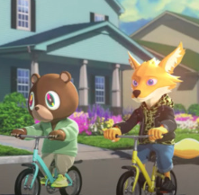

Favorite Artist
Frank Ocean
The first song Jugs added from Frank Ocean was Ivy on November 21st, 2022. His favorite album by Frank is Endless, and his favorite song is Dear April.
An Album He Recommends
LP! by JPEGMAFIA
Crazy production, harsh rapping alongside some softer sonical choices make for an awesome experimental rap album. Jugs's favorite song off LP! is THE GHOST OF RANKING DREAD!
A New Interest
Bon Iver
One day during winter break, Jugs decided to put on "For Emma, Forever Ago," which is Bon Iver's debut album. Woods is now one of his favorite songs of all time.
Follow my main playlist!
christopher smoove

Some experimental R&B, some psychedelic rock, some shoegaze, some indie folk, some pop. Get ready for a mixed bag.